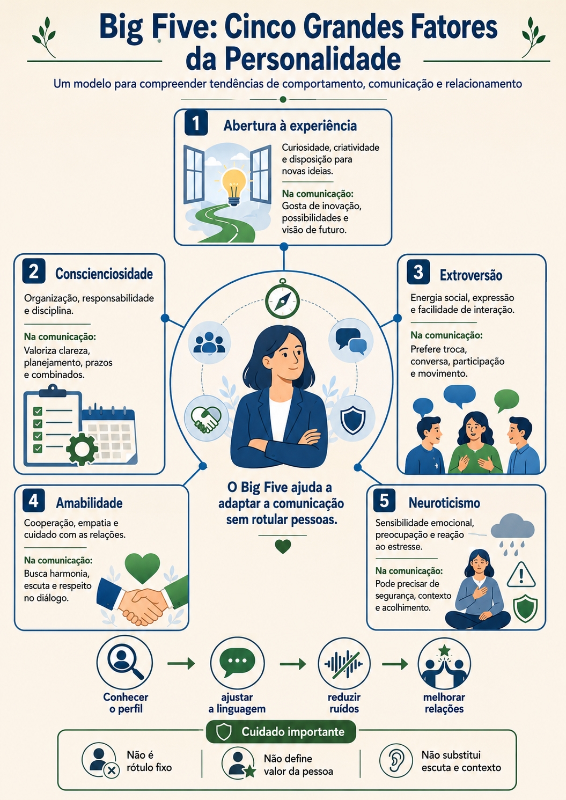
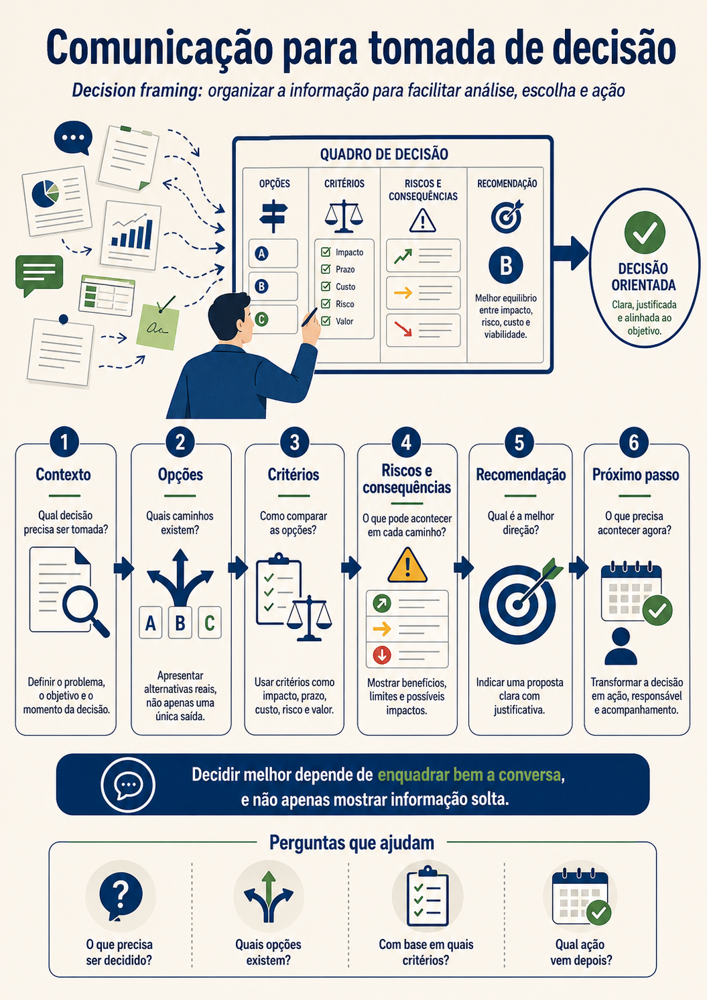
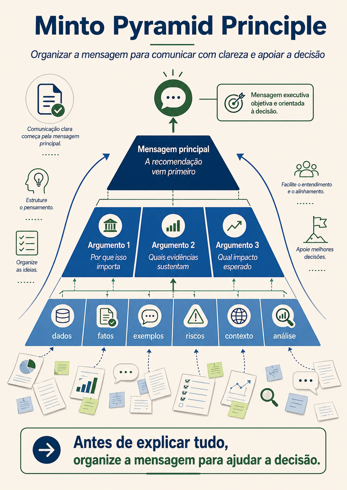

Influência, decisão e comunicação estratégica na prática
Uma conversa de integração sobre confiança, influência, dados, histórias, Minto, delegação, IA e o podcast de apoio ao curso.
Bom dia, pessoal. Pensa em alguém que tenta influenciar uma decisão apenas aumentando a pressão. A pessoa fala mais alto, repete o mesmo argumento, insiste e tenta vencer pelo cansaço. Pode até conseguir uma resposta no curto prazo, mas dificilmente constrói confiança. Influência verdadeira não é empurrar uma decisão. É ajudar o outro a enxergar melhor.
Influência é a capacidade de gerar movimento, adesão ou decisão sem depender apenas de hierarquia. Na liderança, isso é essencial porque nem sempre teremos autoridade formal sobre todas as pessoas. Muitas vezes precisamos influenciar cliente, pares, áreas parceiras, fornecedores, pessoas técnicas, gestão e stakeholders.
Stakeholder é uma pessoa ou grupo que influencia ou é impactado por uma decisão, projeto ou entrega. Pode ser cliente, usuário, patrocinador, liderança, time técnico, área de negócio ou fornecedor. A comunicação estratégica muda de acordo com o stakeholder, porque cada público precisa de um tipo de informação para decidir.
A base da influência é confiança. Sem confiança, até uma boa ideia encontra resistência. Com confiança, uma recomendação simples ganha mais chance de ser considerada. Confiança demora a ser construída e pode cair rápido. Ela depende de coerência, verdade, preparo, escuta, presença e entrega.
Não precisa ser. Manipular é tentar controlar a decisão do outro escondendo intenção, distorcendo informação ou buscando vantagem injusta. Influenciar de forma saudável é apresentar contexto, mostrar valor, ouvir preocupação, trazer alternativas e ajudar a pessoa a decidir com mais consciência.

Uma ideia forte da capacitação foi fazer o que deve ser feito e estar no que se faz. Isso significa presença. Não basta executar uma tarefa de qualquer jeito enquanto a cabeça está em outro lugar. Quando estamos inteiros no que fazemos, escutamos melhor, escrevemos melhor, decidimos melhor e influenciamos melhor.
Também apareceu a relação entre esforço e propósito. Quando a pessoa entende o motivo por trás de uma ação, o esforço muda de peso. Uma tarefa sem sentido parece apenas cobrança. Uma tarefa conectada a valor parece contribuição. Por isso, liderança influente não diz apenas “faça”. Ela explica por que aquilo importa.
Com cliente, isso fica muito claro. Se o cliente Beto olha para uma proposta de produto digital e vê apenas custo, talvez diga não. A comunicação precisa ampliar a análise. O custo inicial é uma parte da conversa. Também existem custos invisíveis: retrabalho, demora, processo manual, risco operacional, baixa visibilidade e perda de oportunidade.
Uma fala possível seria: Beto, entendo sua preocupação com o investimento. É uma decisão importante. Minha sugestão é olharmos não apenas para o custo do projeto, mas também para o custo de continuar como está. Hoje existem retrabalhos, processos manuais e pouca visibilidade. Podemos começar por uma fase menor, focada no problema mais crítico, medir resultado e decidir a evolução com mais segurança.
O cliente não precisa ser pressionado.
Ele precisa enxergar valor com clareza.
Valor não é apenas número. Valor pode ser redução de risco, ganho de tempo, melhoria de experiência, aumento de controle, rastreabilidade, previsibilidade, qualidade de decisão ou redução de desgaste. Quando a liderança comunica valor, ela conecta a solução com uma dor real.
Se o cliente não quiser seguir, forçar não ajuda. Uma postura madura é respeitar o momento, deixar a análise registrada e talvez propor um caminho menor. Influenciar também é saber parar. A relação vale mais do que vencer uma conversa.
Como fazer amigos e influenciar pessoas, entra como repertório para lembrar que influência começa no modo como tratamos pessoas, escutamos, reconhecemos e construímos confiança.

Agora vamos trazer dados. Comunicar com dados não é despejar número. Um número sozinho pode não dizer nada. Se eu digo que o retrabalho aumentou 30%, a pessoa pode perguntar: isso é grave? Em qual área? Qual impacto? O que fazemos com isso? O dado precisa virar contexto.
Uma boa informação para decisão responde: qual é o problema, quais dados sustentam a análise, o que esses dados significam, quais opções existem, quais riscos aparecem e qual recomendação faz sentido. Essa sequência transforma informação em apoio real à decisão.
A técnica conhecida como Minto Pyramid ajuda muito. A ideia é começar pela conclusão ou recomendação, depois trazer os principais motivos e só então apresentar detalhes. Em vez de contar toda a investigação até chegar no ponto, você orienta a pessoa desde o início.
Por exemplo: recomendamos revisar a etapa de validação antes de automatizar o processo inteiro. Essa recomendação se apoia em três motivos: o maior retrabalho está nessa etapa, o ajuste é mais rápido e o risco para a próxima entrega diminui. Os dados mostram que 42% dos ajustes ocorreram após validação nas últimas quatro semanas.
Depois da pausa, vamos conectar isso com delegação e modelos de gestão. Delegar não é largar a tarefa e desaparecer. Também não é continuar controlando cada passo. Delegar é transferir responsabilidade com clareza de objetivo, limite, autonomia, critério de qualidade e ponto de acompanhamento.
Micromanagement, ou microgerenciamento, acontece quando a liderança controla detalhes demais e sufoca a autonomia. A pessoa do time passa a esperar autorização para tudo. O oposto também é ruim: abandonar sem contexto. A gestão mais madura combina autonomia com checkpoints. Checkpoint é um ponto combinado para acompanhar andamento, risco e apoio necessário.
Em Gestão 3.0, a liderança não deixa de liderar. Ela lidera criando sistema melhor: clareza, propósito, autonomia, feedback, transparência e melhoria contínua. A equipe participa mais, mas dentro de limites claros. Autonomia sem limite vira confusão. Limite sem autonomia vira controle excessivo.
A IA entra como apoio. Ela pode ajudar a resumir reunião, organizar transcrição, gerar rascunho de mensagem, estruturar alternativas, revisar clareza, montar perguntas e preparar uma conversa. Mas a IA não assume responsabilidade pela relação, pelo contexto sensível, pela decisão ética ou pela confidencialidade.
Use IA interna ou aprovada quando houver informação sensível. Não coloque dados de cliente, contratos, código ou informação confidencial em ferramenta externa sem autorização. Comunicação estratégica também é saber proteger informação.

Para apoiar a revisão do curso de forma leve, existe uma página de podcast com os áudios complementares. Ela fica como material extra. A ideia é que a pessoa possa ouvir os resumos, reforçar repertório e revisitar os temas enquanto trabalha, caminha ou organiza as anotações.
Influência também depende de reputação. Reputação é aquilo que as pessoas esperam de você com base no que já observaram. Se você costuma cumprir combinados, suas recomendações ganham peso. Se costuma exagerar, vender facilidade demais ou esconder risco, sua fala perde força. A influência de hoje foi construída antes da conversa começar.
Comunicar valor exige entender a dor do outro. Antes de apresentar uma solução, pergunte o que está doendo. O cliente está preocupado com custo? Com prazo? Com reputação? Com risco técnico? Com pressão interna? Com experiência do usuário? A mesma proposta precisa ser explicada de forma diferente dependendo da dor principal.
Dados ajudam a dar sustentação, mas histórias ajudam a dar sentido. Um indicador mostra que o retrabalho subiu. Uma história mostra como esse retrabalho afeta uma pessoa, um cliente, uma decisão ou uma entrega. Comunicação estratégica usa os dois. Dados sem história podem ficar frios. História sem dados pode parecer opinião solta.
A Minto Pyramid é útil porque respeita o tempo de quem decide. Pessoas em posição de decisão geralmente recebem muita informação. Se você começa com detalhes demais, pode perder atenção antes de chegar ao ponto. Quando começa pela recomendação, a pessoa entende o caminho e depois avalia os argumentos.
Também é preciso mostrar alternativas. Uma comunicação madura não apresenta só o caminho preferido e esconde o resto. Ela mostra opções comparáveis. Opção A, menor custo e maior risco. Opção B, custo intermediário e melhor previsibilidade. Opção C, maior investimento e ganho estrutural. A decisão fica mais consciente.
Delegar bem também influencia. Uma equipe que recebe autonomia com clareza se desenvolve mais. Uma equipe controlada em cada detalhe se acostuma a esperar ordens. Uma equipe abandonada se sente insegura. O equilíbrio está em combinar objetivo, limites, critérios e checkpoints.
Checkpoint não é fiscalização desconfiada. É um ponto de apoio. A liderança pode dizer: você conduz esta frente, e na quarta fazemos um checkpoint para olhar riscos, dependências e decisões que precisam de apoio. Assim, a autonomia existe, mas a pessoa não fica sozinha.
IA pode apoiar a comunicação de muitas formas: transformar anotações em resumo, sugerir estrutura de e-mail, revisar tom, simplificar uma explicação técnica, criar perguntas para reunião, comparar alternativas, organizar transcrição. Mas a IA não conhece toda a cultura, toda a política interna e todo o histórico humano da relação. Por isso, revisar é obrigatório.
Também é bom lembrar que informação sensível precisa de proteção. Comunicação estratégica não é apenas falar bem. É saber o que pode circular, onde pode circular, quem pode acessar e qual ferramenta está autorizada. Segurança da informação também é responsabilidade de liderança.
O podcast entra como reforço leve. Uma pessoa pode ouvir um áudio sobre feedback antes de conduzir uma conversa. Pode ouvir o episódio sobre canal ideal antes de organizar uma reunião. Pode ouvir o episódio sobre IA e rotina para pensar em produtividade. O áudio não substitui a aula, mas ajuda a manter o repertório vivo.
No fim, a comunicação estratégica se torna uma prática integrada. Clareza para pedir. Escuta para entender. Assertividade para posicionar. CNV para reduzir ataque. Reunião bem conduzida para decidir. Feedback para desenvolver. Conflito tratado com critério. Influência para gerar decisão consciente. Dados e histórias para apoiar escolha. IA para organizar, nunca para substituir responsabilidade.
Reflexão 37
Escreva uma mensagem para influenciar um cliente resistente por custo, sem pressionar e sem prometer o que não pode garantir.
Ver uma possibilidade de resposta
Uma possibilidade: entendo sua preocupação com o investimento. Para reduzir risco, podemos começar por uma etapa menor, focada no problema que hoje gera mais retrabalho. Assim medimos impacto real antes de ampliar a solução e tomamos a próxima decisão com base em evidência.
Reflexão 38
Use a lógica da Minto Pyramid para comunicar uma recomendação de melhoria em processo.
Ver uma possibilidade de resposta
Uma possibilidade: recomendação, revisar a etapa de validação. Motivos, concentra retrabalho, exige menor esforço imediato e reduz risco para a próxima entrega. Dados, 42% dos ajustes ocorreram nessa etapa nas últimas quatro semanas. Decisão necessária, aprovar ajuste agora e avaliar automação depois.
Reflexão 39
Escreva um exemplo de delegação com autonomia e checkpoint.
Ver uma possibilidade de resposta
Uma possibilidade: preciso que você conduza o levantamento dos riscos da próxima entrega. Você tem autonomia para conversar com as áreas envolvidas e organizar os pontos. O critério é trazer risco, impacto e ação proposta. Fazemos um checkpoint na quarta às 10h para ajustar o que for necessário.
Reflexão 40
Pense em uma forma segura de usar IA em comunicação de liderança.
Ver uma possibilidade de resposta
Uma possibilidade: usar IA interna para transformar a transcrição de uma reunião em lista de decisões, pendências e responsáveis. Depois, revisar manualmente o resultado antes de enviar, removendo qualquer informação sensível que não deva circular.
Comunicação estratégica não é dom reservado para pessoas carismáticas. É treino. É clareza, escuta, estrutura, presença, coragem, respeito, dado, história, tecnologia bem usada e responsabilidade. Quando essas peças se juntam, a liderança deixa de depender apenas de autoridade e passa a conduzir com mais confiança.